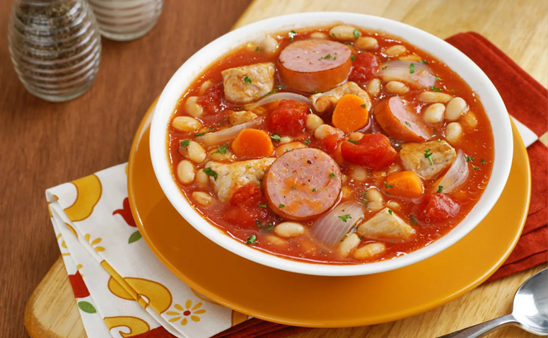
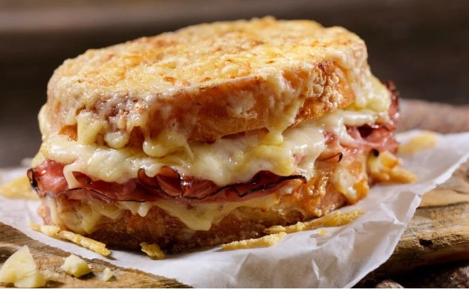

Filé Mignon à Francesa
- 500 gramas de filé mignon cortados em medalhão ou bifes mais fino
- Sal a gosto
- Pimenta-calabresa a gosto
- Manteiga a gosto
- 1 cebola
- Ervilhas frescas a gosto
- Presunto a gosto
- Batata palha a gosto
Em uma vasilha, coloque os filés e tempere com sal e pimenta. Em uma frigideira com manteiga, grelhe os filés muito bem e dos dois lados. Reserve. Na mesma frigideira, doure as cebolas e, em seguida, adicione as ervilhas, o presunto em cubos e a batata palha. Sirva com a carne e aproveite.

Deixe o feijão de molho por 4h, depois cozinhe e reserve. Enquanto isso, dessalgue a carne suína. Corte a linguiça, frite e reserve. Corte a carne suína e cozinhe até ficar macia, reserve. Em uma panela, doure a cebola no azeite. Adicione a cenoura e o salsão. Tempere com sal e pimenta, refogando por 6 minutos. Acrescente o alho e mexa por 1 minuto. Coloque o molho de tomate, o vinho branco, a água e misture. Em seguida, adicione as linguiças e a carne suína. Diminua o fogo e deixe cozinhar por 10 minutos. Acrescente o feijão e espere mais uns 5 minutos até engrossar.
Cassoulet Francesa
- 500g de feijão branco
- 500g de carne suína salgada e curada
- 2 gomos de linguiça paios
- 1 cebola média picada
- 1 cenoura picada
- 1 talo de salsão picado
- Sal a gosto
- Pimenta-do-reino a gosto
- 2 dentes de alho triturados
- 4 colheres de sopa de molho de tomate
- 1/4 de xícara de vinho branco
- 2 conchas de água
Deixe o feijão de molho por 4h, depois cozinhe e reserve. Enquanto isso, dessalgue a carne suína. Corte a linguiça, frite e reserve. Corte a carne suína e cozinhe até ficar macia, reserve. Em uma panela, doure a cebola no azeite. Adicione a cenoura e o salsão. Tempere com sal e pimenta, refogando por 6 minutos. Acrescente o alho e mexa por 1 minuto. Coloque o molho de tomate, o vinho branco, a água e misture. Em seguida, adicione as linguiças e a carne suína. Diminua o fogo e deixe cozinhar por 10 minutos. Acrescente o feijão e espere mais uns 5 minutos até engrossar.

Em uma panela, coloque a manteiga e deixe derreter. Adicione a farinha, misture bem e deixe cozinhar por cerca de 2 minutos, sem parar de mexer. Gradualmente vá acrescentando o leite e mexendo. Deixe cozinhar até o molho engrossar. Desligue o fogo, coloque a noz-moscada, o sal e misture bem. Passe o molho em 2 fatias de pão, coloque o presunto, o queijo ralado e feche eles formando um sanduíche. Passe uma cama de molho em cima do sanduíche, salpique queijo ralado e leve para o forno preaquecido a 180º graus até gratinar. Agora é só servir. Bom apetite.
Croque Monsieur
-
Molho
- 2 colheres de sopa de manteiga
- 2 colheres de sopa de farinha de trigo
- 2 xícaras de chá de leite morno
- Noz-moscada a gosto
- Sal a gosto Sanduíche
- 2 fatias de pão de sanduíche (sem casca)
- 2 fatias de presunto
- 80 gramas de queijo mussarela ralada
Em uma panela, coloque a manteiga e deixe derreter. Adicione a farinha, misture bem e deixe cozinhar por cerca de 2 minutos, sem parar de mexer. Gradualmente vá acrescentando o leite e mexendo. Deixe cozinhar até o molho engrossar. Desligue o fogo, coloque a noz-moscada, o sal e misture bem. Passe o molho em 2 fatias de pão, coloque o presunto, o queijo ralado e feche eles formando um sanduíche. Passe uma cama de molho em cima do sanduíche, salpique queijo ralado e leve para o forno preaquecido a 180º graus até gratinar. Agora é só servir. Bom apetite.

Crème Brulée
- 8 gemas de ovos
- 200g de açúcar refinado
- Essência de baunilha
- 1 litro de creme de leite fresco
- Açúcar cristal para a cobertura de caramelo
Misture as gemas, o açúcar refinado, a baunilha e acrescente o creme de leite à mistura e misture até obter um creme homogêneo. Leve o creme ao fogo em banho maria e mexa até que o creme forme uma fina camada na colher. Distribua o creme em seis tigelinhas, você pode usar uma peneira para tirar possíveis bolinhas que podem ter se formado. Deixe o creme na geladeira por pelo menos 5 horas. Coloque açúcar cristal sobre cada tigela e aqueça para formar o caramelo, o ideal é usar um maçarico culinário para dar a consistência ideal do crème brûlée.